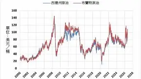

張皓崴
-
陳鏞基引退》最後一個打席嗆司中落淚 陳鏞基生氣自己沒冷靜
Yahoo運動
-
陳鏞基23季生涯將謝幕 賴總統贈球棒祝福
Rti 中央廣播電臺
-
鬥陣起行．南霸天週報(Week26)-永不放棄，鏞不止步 - 中職 - 棒球
運動視界Sports Vision

8 200+ 次搜尋 生活2026.09.20
生活2026.09.20
Social Lab（OpView 社群口碑資料庫）每週彙整各平台熱門事件。榜上的數據以圖表呈現， 這裡列出每週彙整的標題與觀測期間，點進去看完整排行。
 YouTube 意見領袖
YouTube 意見領袖
Social Lab 依社群聲量統計的各平台人氣意見領袖前三名。
Bluesky 的全站熱門話題，以英語圈的娛樂、體育、政治為主，僅供參考。